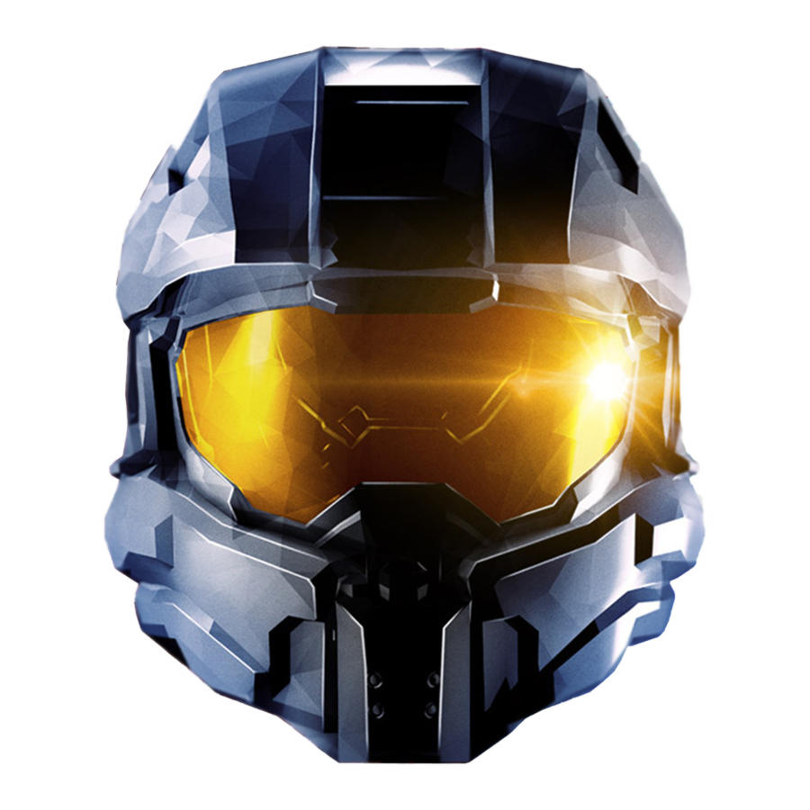
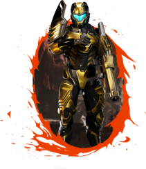
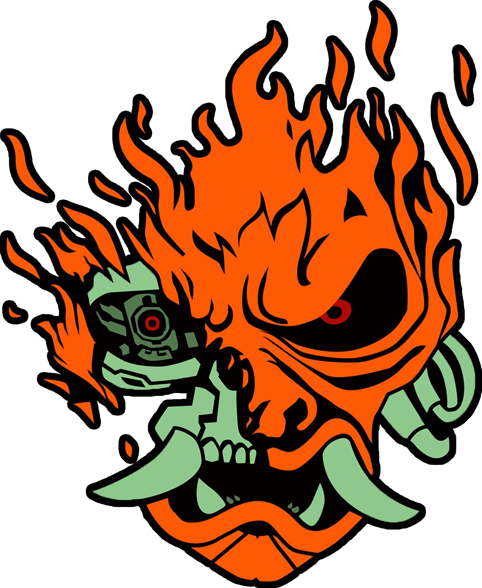

Halo: The Master Chief Collection

The Halo Series has always been a personal favorite since I was younger. I have memories of playing Halo 3 and Halo: Reach with friends on the Xbox 360. When the entire Master Chief collection was announced for PC, I knew I had to play it. Containing six Halo games from Halo: Reach to Halo 4 (in proper order) this bundle was entirely worth it. With Season 8 approaching, there is plenty of content from the past 7 seasons to unlock through simply playing the game. To see these games still live on is truly wonderful.
Trailer:Link
Splitgate

I only recently gotten into this game but it uses mechanics similar to Portal which is an amazing game as well. In fact, it combines elements of not just Portal but also Halo. It's a first person shooter where you can use portals to your advantage which can be super fun but also pretty chaotic. It's multiplayer is thriving with Season 0. Last time I checked the player count on Steam there were several thousands of players. Let's just say loading into a match is no issue in Splitgate.
Trailer:Link
Cyberpunk 2077

Despite the game's amount of bugs that has been covered by the media plenty, I have actually enjoyed playing Cyberpunk 2077 since I purchased it in it's early release stages. Storywise the game is a real treat offering something new to the table. Today, while there are still things to be worked on, the game's in a pretty good state and I haven't encountered anything too bad gameplay wise (except the absolutely poor framerate, of course.) I would recommend it now much more than when I first bought it, but still supported the game back then and even told people to possibly give it a shot if they were curious.
Trailer:Link